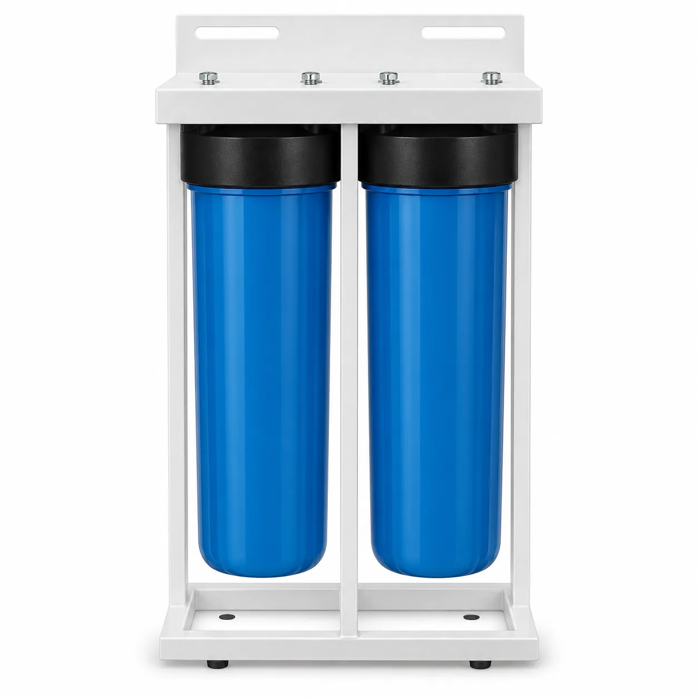

Ensemble de deux porte-filtres sur châssis porteur — 20 × 4,5 pouces
Porte-filtre pour eau froide. Clé de serrage fournie. Cartouches vendues séparément. Conditionnement : 1 ensemble(s) par carton.
Choisir la configuration
Raccordements disponibles : Filetage plastique: 3/4 po ; Filetage plastique: 1 po ; Filetage plastique: 1,5 po. Précisez le diamètre et le type de filetage lors de la demande de prix. Vérifiez le dégagement nécessaire sous la cuve pour le remplacement de la cartouche.
Demander un devis pour cette configuration